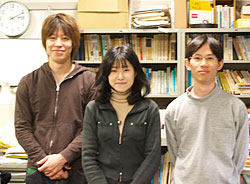
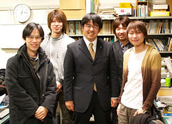

中村研ニュース（2007年度）
修士生２名と学部生３人が無事に修了・卒業［2008年3月］
3月26日（水）に修了式・卒業式が行なわれ，中村研も修士生２名と学部生３人が無事に修了・卒業しました。修了・卒業したメンバーは次の通りで，それぞれ，就職もしくは進学をします。- 修士修了
- 亀井 拓也，萩原 宙樹
- 学部卒業
- 田川 智博，武市 祥史，横澤 孝章
中村研で卒業生と修了生の送別会［2008年3月］
3月25日（火）の夜に，中村研で学部卒業生と博士課程前期修了生の送別会が開かれました。
卒業生の木村文陽氏（現・東京大学大学院工学系研究科）も参加して，和やかにひとときを過ごしました。
院生・学部生および共同研究者が第23回固体飛跡検出器研究会で発表［2008年3月］
院生と学部生および共同研究者が，3月25日（火）に早稲田大学で開かれた第23回固体飛跡検出器研究会で発表しました。発表のタイトルは次の通りです。
◎亀井 拓也：「宇宙線超重核観測に向けたBP-1固体飛跡検出器の開発」◎田川 智博：「ガラス飛跡検出器BP-1のエッチング条件の最適化と化学構造」
◎平賀 純子：「BP-1ガラスを利用したコリメータの製作とX線CCDへの応用」
OBの尾崎雄一氏が来訪［2008年3月］
3月21日（金）に中村研OBの尾崎雄一氏（現・コニカミノルタオプト）が就職説明会のために来訪しました。OBの柏木茂氏が来訪［2008年3月］
3月18日（火）に中村研OBの柏木茂氏（現・大阪大学）が立ち寄りました。次年度の博士課程前期１年生が研究室に来訪［2008年3月］
3月14日（金）に，平成20年度に中村研の博士課程前期1年生として入学予定の学生が研究室に訪れ，今後の研究計画等について話をしました。OBの富田賢典氏が来訪［2008年3月］
3月11日（火）に中村研OBの富田賢典氏（現ニコン）が就職説明会のために来訪しました。院生・学部生がスキー旅行に［2008年3月］
院生・学部生が3月2日（日）から5日（水）まで白馬八方尾根にスキー旅行に行きました。皆，怪我もなくスキーやスノーボードを堪能しました。学部４年の３人の学部生が卒論発表会で発表［2008年2月］
2月19日（火）に工学部知能物理工学科の卒論発表会が開かれ，中村研の学部４年の３人の学部生が発表を行ないました。発表のタイトルは次の通りです。
◎田川 智博：「ガラス飛跡検出器BP-1のエッチング処理の最適化と化学構造」◎武市 祥史：「汎用電圧入出力装置を用いた温度制御システムの開発」
◎横澤 孝章：「BP-1ガラス製Ｘ線コリメータの最適化の研究」
次年度の新４年生が研究室に来訪［2008年2月］
2月15日（金）に，平成20年度に中村研の４年生として仮配属された４人の現３年生が研究室に訪れ，今後の進路や卒業研究の計画等について話をしました。M２の２人の院生が修論発表会で発表［2008年2月］
2月13日（水）に工学府物理情報工学専攻物理工学コースの修論発表会が開かれ，中村研の博士課程前期２年の２人の院生が無事に発表を行ないました。発表のタイトルは次の通りです。
◎亀井 拓也：「宇宙線超重核観測に向けたガラス固体飛跡検出器の開発」
◎萩原 宙樹：
「液体キセノンのシンチレーション光のスペクトル測定」
M１の宮本健司が「放射線検出器とその応用」研究会で講演［2008年2月］
2月5日（火）〜7日（木）に第22回「放射線検出器とその応用」研究会（高エネルギー加速器研究機構放射線科学センターと応用物理学会・放射線分科会並びに東京大学工学部原子力工学研究施設・弥生研究会との共催）が高エネルギー加速器研究機構（つくば）で開催され，6日（水）に中村研の博士課程前期１年の宮本健司が講演を行ないました。講演のタイトルは「硬Ｘ線用CCD内部で形成される電荷雲形状の測定実験」で，本研究室が理化学研究所の平賀純子博士等と共同で研究を進めているBP-1ガラス製超微細Ｘ線コリメータを用いたＸ線CCDの電荷雲の測定実験の最新結果について発表しました。
OBの尾崎雄一氏が来訪［2008年1月］
 1月25日（金）に中村研OBの尾崎雄一氏（現コニカミノルタオプト）が就職説明会のために来訪しました。次年度の新卒研生として４人が仮配属［2008年1月］
1月24日（木）に，中村研の平成20年度の新卒研生として4人が仮配属されました。中村研での卒業研究を志望する学部３年生へ［2008年1月］
中村研での卒業研究を志望する学部３年生に向けたＦＡＱを，ここに掲載しました。宇宙航空研究開発機構でM１の宮本が発表［2008年1月］
1月9日（水）に宇宙航空研究開発機構の「宇宙科学シンポジウム」で，博士課程（前期）１年の宮本が「硬Ｘ線用CCD内部で形成される電荷雲形状の測定実験」についてポスター発表しました。理化学研究所でM１の宮本が発表［2007年12月］
12月6日（木）に理化学研究所の「宇宙放射線研 知の共有ゼミ」で，博士課程（前期）１年の宮本が「硬Ｘ線用CCD内部で形成される電荷雲形状の測定実験」について発表し，２時間にわたって有意義なやり取りを行ないました。OBの高橋純氏が来訪［2007年11月］
11月12日（月）に中村研OBの新婚の高橋純氏（富山大学准教授）が来訪し，元気な様子を見せました。OG・OBが来訪［2007年11月］
11月10日（土）のホームカミングデーに，中村研OGの伊藤利恵氏（現川崎市小学校教員），OBの橋本安章氏（現富士ゼロックス），内田佳宏氏（現オリンパス），富田賢典氏（現ニコン），尾崎雄一氏（現コニカミノルタオプト），倉田真吾氏（現東芝メディカルシステムズ）が来訪されました。知物ソフトボール大会で惜敗［2007年11月］
11月1日（木）に行われた2007年秋季知物ソフトボール大会において，中村研チームは準決勝で優勝チームに惜敗しました。研究テーマの工学研究院第１期「グループ研究」への登録が決定［2007年10月］
中村が代表者となって佐々木教授と共に「基礎科学に立脚した新規放射線工学技術の開発研究」を工学研究院の第１期グループ研究に応募していましたが，10月24日の研究企画経営会議の審査の結果，登録が認められました。中村研ＯＢの高橋純氏のエピソードが週刊誌に掲載［2007年10月］
中村研ＯＢの高橋純氏（富山大学准教授）のエピソードが，週刊新潮（9月27日号）の記事「結婚」（132ページ）に掲載されていたようです。ご結婚おめでとう！XMASS実験のプロジェクトが毎日新聞ニュースサイトで紹介［2007年10月］
毎日新聞のニュースサイトで，XMASS実験について『暗黒物質：探索計画がスタート 宇宙誕生の謎解明へ』というタイトルで紹介されています。［2007年10月10日記事］毎日JP ニュースセレクト http://mainichi.jp/select/science/news/20071010k0000e040023000c.html
科学雑誌『Newton』11月号に中村が取材協力した内容が掲載［2007年9月］
 中村が取材協力したことが，科学雑誌『Newton』11月号（9月26日発売）の44〜45頁に見開きで掲載されました。宇宙誕生時の「化石」とも言える超重磁気単極子（モノポール）について，その歴史と中村が以前に関わった探索実験の写真などが掲載され，同号の様々な箇所に，協力者として中村の名前も載っています。
中村が取材協力したことが，科学雑誌『Newton』11月号（9月26日発売）の44〜45頁に見開きで掲載されました。宇宙誕生時の「化石」とも言える超重磁気単極子（モノポール）について，その歴史と中村が以前に関わった探索実験の写真などが掲載され，同号の様々な箇所に，協力者として中村の名前も載っています。『Newton』のサイト http://www.newtonpress.co.jp/science/newton/
応用物理学会秋季学術講演会でM１の佐藤と宮本が登壇［2007年9月］
9月4日（火）から8日（土）まで，応用物理学会2007年秋季第68回学術講演会が北海道工業大学で開催され，7日に中村研の博士課程（前期）１年の佐藤友厚と宮本健司が登壇しました。 講演のタイトルはそれぞれ，「X線CCDの詳細診断のためのBP-1ガラス製マルチコリメータの開発」（佐藤）と「BP-1ガラス製マルチコリメータを用いたX線CCDの詳細診断」（宮本）で，本研究室が理化学研究所の平賀純子博士等と共同で研究を進めているBP-1ガラス製の超微細Ｘ線コリメータの開発計画および現状と，それを用いたＸ線CCDの電荷雲の測定実験の最新結果と今後の計画について発表しました。科学雑誌『Newton』10月号の次号予告欄に掲載［2007年8月］
中村が取材協力したことが科学雑誌『Newton』11月号（9月26日発売予定）に掲載予定となりました。10月号の次号予告欄に中村の名前が載っています。『Newton』のサイト http://www.newtonpress.co.jp/newton/
『Newton』次号予告 http://www.newtonpress.co.jp/newton/newton.html（※10月号の次号予告は終了しました）
ニュートンプレスに取材協力［2007年8月］
8月9日（木）に，中村が，研究に関して（株）ニュートンプレスから取材を受けました。M１の佐藤友厚と宮本健司がナノテクノロジー2007で発表［2007年8月］
8月2日（木）にナノテクノロジー2007が横浜ワールドポーターズで開催され，中村研の博士課程（前期）１年の佐藤友厚と宮本健司がポスター発表を行ないました。発表のタイトルはそれぞれ，「固体の粒子飛跡を用いた超微細X線コリメータの開発」（佐藤）と「超微細X線コリメータを用いたX線CCDの詳細診断」（宮本）で，本研究室が理化学研究所の平賀純子博士等と共同で研究を進めているBP-1ガラス製の超微細Ｘ線コリメータの開発と，それを用いたＸ線CCDの電荷雲の測定実験の最新結果とその応用について発表しました。
大学院工学府博士課程（前期）の特別選抜で１名合格［2007年7月］
平成20年度横浜国立大学大学院工学府博士課程（前期）の特別選抜において，本研究室を志望する受験生が１名合格しました。卒業生が来訪［2007年7月］
7月18日（水）に，教育学部時代の教え子で，卒業生の青木南海子さん（現：横浜山手女子中学校・高等学校講師）が来訪されました。［写真：7／18・中村教官室で］
東京大学宇宙線研究所神岡宇宙素粒子研究施設の中畑教授が来訪［2007年6月］
6月5日（火）に，共同研究のXMASS実験を行っている東京大学宇宙線研究所神岡宇宙素粒子研究施設の中畑教授が来訪され，学生向けにセミナーをしていただきました。３年生も飛び入りで参加し，充実したセミナーでした。［写真：6／5・研究室と会議室で］知物ソフトボール大会で３位［2007年6月］
6月1日（金）に行われた2007年春季知物ソフトボール大会において，中村研チームは３位の成績を収めました。【速報】BP-1ガラスで世界最高レベルの感度を達成！［2007年6月］
我々は，世界最高レベルの感度のBP-1ガラスを手にした模様です。現在，慎重な確認作業を進めています。中村研OBの内田佳宏氏，富田賢典氏，尾崎雄一氏が来訪［2007年5月］
5月18日（金）に中村研ＯＢの内田佳宏氏（知能物理工学科・第３期生／現：オリンパス），富田賢典氏（知能物理工学科・第３期生／現：ニコン），尾崎雄一氏（知能物理工学科・第４期生／現：コニカミノルタオプト）の３人が来訪されました。［写真：5／18・研究室で］NHKのテレビ番組「サイエンスZERO」でXMASS実験が紹介されました［2007年5月］
NHKのテレビ番組「サイエンスZERO」で，５月５日に放送された『宇宙を満たす 暗黒物質の謎』の回の中でXMASS実験が紹介されました。再放送は次の通りですのでご覧下さい。神岡鉱山の地下の実験室や，XMASSの現試験装置，研究代表者である東京大学宇宙線研究所所長の鈴木洋一郎先生が出ています。- ５月１０日（木） 午前 ２：３０ 〜 ３：１４ ＢＳ２
- ５月１１日（金） 午後 ７：００ 〜 ７：４４ 教育
平成19年度 科学研究費補助金（学術創成研究費）にXMASS実験が採択！［2007年4月］
4月10日（火）付けで，中村が研究分担者の一人となって申請していた平成19年度科学研究費補助金（学術創成研究費）に，XMASS実験が採択されました！
課題名は「宇宙暗黒物質の研究」（研究代表者：鈴木洋一郎／東京大学宇宙線研究所所長）で，約800kgの液体キセノンを用いて，従来の約100倍という世界最高感度で宇宙暗黒物質の研究を神岡鉱山（岐阜県飛騨市）内で行ないます。平成19年度からの５ヶ年計画で，総計４億円を超える予算が認められました。
中村研究室では，液体キセノンのシンチレータとしての性質の研究を引き続き主に担当すると共に，様々な形で実験計画全体の推進に深く関わっていく予定です。
【謝辞】多くの研究費をお認めいただき，これまで様々な形で研究をご支援いただいた皆々様方に心より感謝申し上げます。国民の皆様の血税を有効に活かし良い結果を得て報いたいと考えております。 引き続きのご支援をどうぞよろしくお願い申し上げます。
新しいメンバーを迎えました［2007年4月］
2007年度がスタートし，新４年生も研究室に入ってきました。新しいメンバーは次の通りです。［写真：4/13歓迎会］
- 片倉 勇人
- 田川 智博
- 武市 祥史
- 横澤 孝章